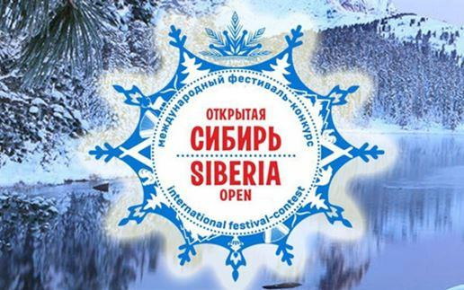
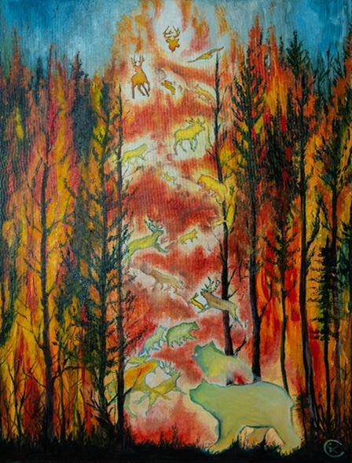
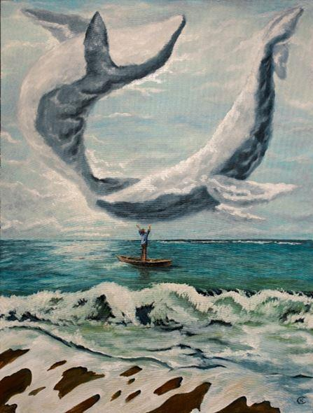
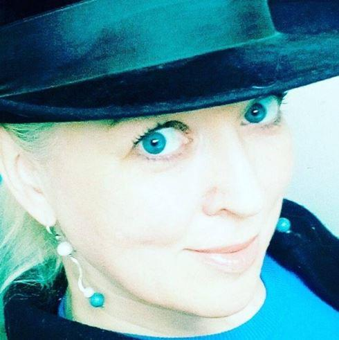
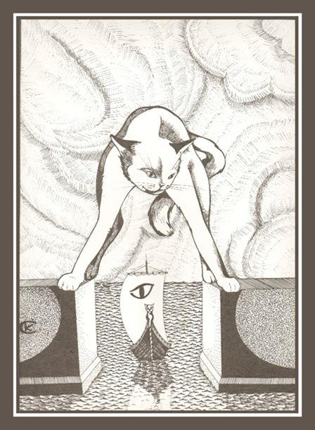
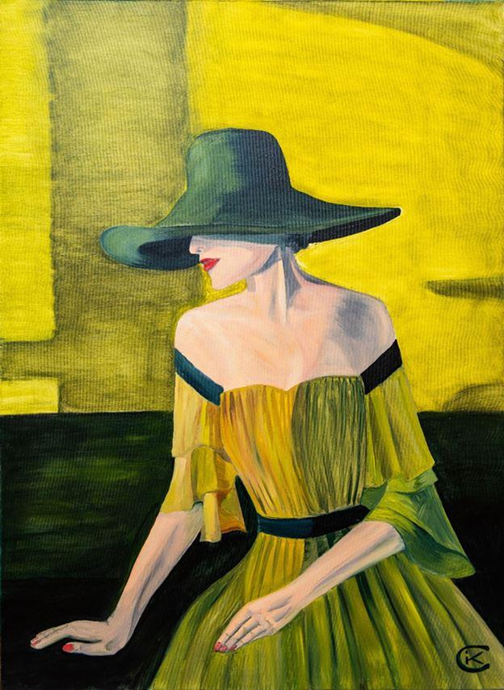
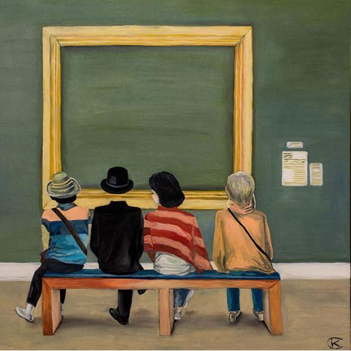
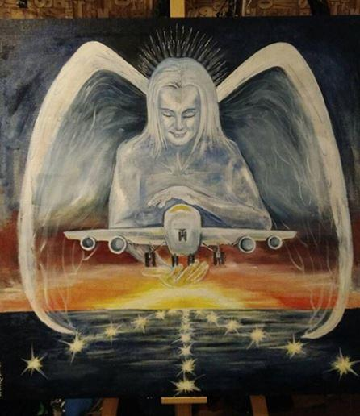

Notre ami Jean-Louis Etienne a, depuis la Belgique, rencontré pour Méthode l’artiste Irina Alekseevna Zhukovskaia. Une entrevue rafraîchissante et artistique…
L’année dernière, le Centre scientifique et culturel de la Russie en Belgique a accueilli le festival « Open Siberia » au cours duquel on a pu assister à un concert de chants diaphoniques, des danses traditionnelles, un défilé de créations de la styliste Tatiana Matiash et une pièce de théâtre avec la tragédienne Olga Roukosoujeva.
Ces artistes sont originaires de la ville de Kansk, tout comme Irina A. Zhukovskaia, qui y présentait sa dernière exposition : « SmArt Thoughts ».
L’artiste ne cache pas son admiration pour Magritte, Tout comme lui, Irina provoque l’étonnement, la réflexion en détournant une image banale. Ainsi en est-il de ce jeune homme dans un canot, bras levés au ciel et dont on ne sait s’il admire les nuages ou salue des baleines. Un homme d’âge mûr, accoutré comme un ado, est plongé dans son smartphone. Une ballerine consulte le sien dans un endroit incongru en prenant une position pour le moins inconfortable. La féminité (sous forme d’autoportraits), l’actualité (on pense ici aux incendies de 2019 : les animaux de la taïga empruntent un sentier incandescent avant de disparaître dans les cieux) et l’humour (les sept Merveilles du Monde en version féline) sont eux aussi rarement absents. Le spectateur est également surpris de la dimension des toiles de l’artiste : beaucoup d’entre elle dépassent un mètre carré, parfois deux, comme une porte ouverte sur son imaginaire. Essayons d’en savoir plus…

La Taïga en flammes

Le jeune homme et les baleines nuageuses
Méthode : Irina Alekseevna, bienvenue chez nous ! La peinture est-elle pour vous une vocation précoce ?
Irina A. Zhukovskaia : Oui, tout à fait ! Je suis née en Sibérie, à Kansk, le 17 avril 1976. À cette époque, il n'y avait pas d'ordinateurs ou de graphistes qui imprimaient à la demande et à l’occasion des fêtes, ma mère dessinait de superbes cartes postales de grand format, pour féliciter la famille, les amis et connaissances. La beauté de ses images m’a captivée. J'ai alors commencé à dessiner. J'ai illustré des publications et des cartes de vœux à l'école.
Plus tard, j’ai suivi des cours préparatoires à l'Ecole d'Art pour enfants de Kansk et ai continué à suivre les formations sans le dire à mes parents. J'avais une très mauvaise vue et l’ophtalmologue m'a interdit d’assister à ces cours. Vu que j'étais une enfant très active, j’ai suivi toutes les formations qui se présentaient alors que mes parents, pensaient que j'assistais à une pièce de théâtre, un spectacle de marionnettes ou participais à des activités de mouvements de de jeunesse.
M. : Vous avez continué votre formation ?
I.A. Zh. : Oui, vu que j’avais passé mes examens de première année avec succès, mes parents ont été mis devant le fait accompli, l’école a accepté mon inscription sans nouvelle consultation de l’ophtalmologue. Maman et papa ont capitulé. C'est ainsi ce que j'ai suivi les cours de l'école d'art pour enfants de Kansk. À la fin ce cycle d’études, j'ai subi une opération chirurgicale qui venait d’être mise au point par le Professeur S. N. Fiodorov. Cette opération a fortement corrigé ma myopie.

Chatlosse
M. : Cela vous a ouvert de nouvelles perspectives…
I.A. Zh. : Oui, j’ai suivi une formation au Collège technologique des services ménagers à de la ville voisine de Krasnoïarsk, avec comme spécialisation « Stylisme et dessin de mode ». J’appréciais particulièrement le graphisme. La majorité de mes travaux sont restés dans les fonds de l'institution.
M. : Vous étiez alors tentée par une carrière artistique ?
I.A. Zh. : À mon retour à Kansk, j’ai rencontré celui qui allait être mon mari, mais ce fut une union malheureuse, durant trois ans et demi. Je me alors suis retrouvée seule, mais heureuse d’avoir la garde de mes deux enfants, un fils et une fille. Les années 2000 furent une période difficile. J'étais entièrement accaparée par ma famille et mon travail. Ma créativité étaient mises à l’écart. Au fil des ans, les enfants ont grandi, adorables, sages attentionnés. Quand ils sont devenus adolescents, j'ai eu un peu de temps libre, que j’ai entièrement consacré à ma grande passion : l’art graphique sous toutes ses formes. Après tout, le matériel n’était pas trop onéreux, j’ai consacré une petite partie de mon modeste budget familial à l’achat de toiles et de peinture à l’huile.

Au sujet de la beauté
M. : L’opportunité de faire découvrir vos œuvres s’est vite présentée ?
I.A. Zh. : Oui, la première exposition internationale a eu lieu dans un festival d'art en République tchèque, ce qui m’a valu les publications de mes peintures dans les catalogues « Art Russe ». Tout en continuant à participer à diverses expositions annuelles, j'ai exposé de nouvelles œuvres à Prague, Přerov (près de Brno) et plus tard à Lacoste et Bruxelles, au Centre scientifique et culturel russe de la ville. Il y a trois ans, l'une de mes œuvres, « Angel of the Plane », a été exposée à l’occasion du concours international « Angels of The World ».
M. : Avez-vous une technique, un courant artistique, un peintre favori ?
I.A. Zh. : Mes œuvres ont été réalisées au pastel, au crayon, à l'acrylique et à l'huile. Toutes étaient toujours une recherche intérieure et de mon univers créatif. L’art minimalisme, abstrait, le surréalisme, tout cela m'a fasciné. J'aime peindre des images dotées d’un sens. L’œuvre devrait encourager le spectateur à s'arrêter, à réfléchir, à faire une pause consacrée à la contemplation et à la réflexion. L’artiste dont je me sens le plus proche est René Magritte. Sincèrement, je rêve de retourner à Bruxelles pour visiter le musée qui lui est consacré. À l’occasion de ma première visite, mon emploi du temps ne m’a pas permis de le visiter.
 A propos du videM. : Quelle frustration ! J’espère que vous reviendrez !
I.A. Zh. : J’en garde néanmoins un souvenir amusant : j’ai fait part à un admirateur belge de mon admiration pour Magritte et mon regret de ne pas avoir visité son musée. Il consulte sa montre et lâche : « nous avons encore le temps ! » Nous avons sauté dans le premier métro, couru jusqu’à la Place Royale… pour nous voir refuser l’entrée par une mégère acariâtre parce que nous avions… cinq minutes de retard !
M. : Parlez-nous de vos projets…
I.A. Zh. : Mes enfants adultes représentent toute ma vie ainsi que bien sûr, la créativité, mes réflexions et émotions sans fin, qui donnent naissance à des images de plus en plus variées.
M. : Le Jour de la Victoire vous évoque quel souvenir familial ?
I.A. Zh. : En fait, mes grands-parents étaient trop jeunes pour aller au front, ils travaillé en usine pour remplacer les ouvriers mobilisés. Après la Victoire, ils ont conservé leur métier. Mon grand-père maternel, Grigory Ykhudin a décidé de s’engager à l’armée. Tout se passait bien jusqu’au jour où, en 1952, lors de manœuvres, il est gravement blessé dans la région du cœur par un ami maladroit. Il a été opéré d’urgence par le docteur Aleksander М. Brekhno, une sommité qui fait toujours référence. Le docteur Brekhno est mort à l’âge de quarante-cinq ans. Sa veuve a offert une photo de son mari à mon grand-père.
Ma mère est née quatre ans plus tard. Mon grand-père travaillait alors à l'imprimerie de Kansk, il était toujours de bonne humeur, son accordéon en bandoulière. Il est décédé un neuf mai, en 1982. Ma grand-mère est restée veuve, toujours active et sereine au sein d’une famille de quatre générations.
Chaque neuf mai, je me souviens fièrement des efforts patriotiques de mes grands-parents et de ce chirurgien qui, en sauvant un jeune soldat, m’a permis de voir le jour.
M. : Revenons à votre parcours artistique : depuis l’exposition internationale « Mars Kot » organisée par l’Union des artistes de Krasnoïarsk en 2009, vous avez participé à une bonne trentaine d’événement, dans votre région natale, ailleurs en Russie et à l’étranger. Prenons pour exemples : l’exposition d'artistes de Krasnoïarsk, un master-class avec les étudiants à Caen, une exposition au Festival d'art de České Budějovice, à Přerov et au centre scientifique et culturel de Russie à Prague, de nombreuses participations aux expositions annuelles des photographes de la ville de Caen (dont des artistes-peintres ont participé à l’exposition « Automne-2012 » à Kansk !) Vos œuvres ont été reproduites dans « Art Russe 2011 » et « Art Russe 2012, catalogues annuel consacrée aux beaux-arts en Russie et avez illustré un recueil de poèmes de Benjamin Zaitsev. Vous multipliez les rencontres avec les jeunes, dont des adolescents d’un centre éducatif fermé à Caen… et en 2018 et 2020, vous participez à « Open Siberia », respectivement à Lacoste et Bruxelles.
M. : Votre tableau « Angel of the Plane » retenu pour le projet « Angels of The World » en 2018 ! ». Parlez-moi de ce projet…
I.A. Zh. : « Angels of The World » est un projet artistique international organisé par des bénévoles. Leur objectif est que 365 artistes peignent chacun un tableau sur le thème de « l'Ange gardien ». Depuis le début du projet, en avril 2014, ils organisent constamment des expositions en Russie et à l'étranger. La première série de peintures est maintenant en République tchèque. Dès que nous aurons rassemblé le nombre d'œuvres requis, nous projetons la création d’un « Calendrier des Anges du Monde », c’est-à-dire un musée destiné à promouvoir les échanges culturels, dont la découverte des artistes russes par le public étranger.
Partager cette page